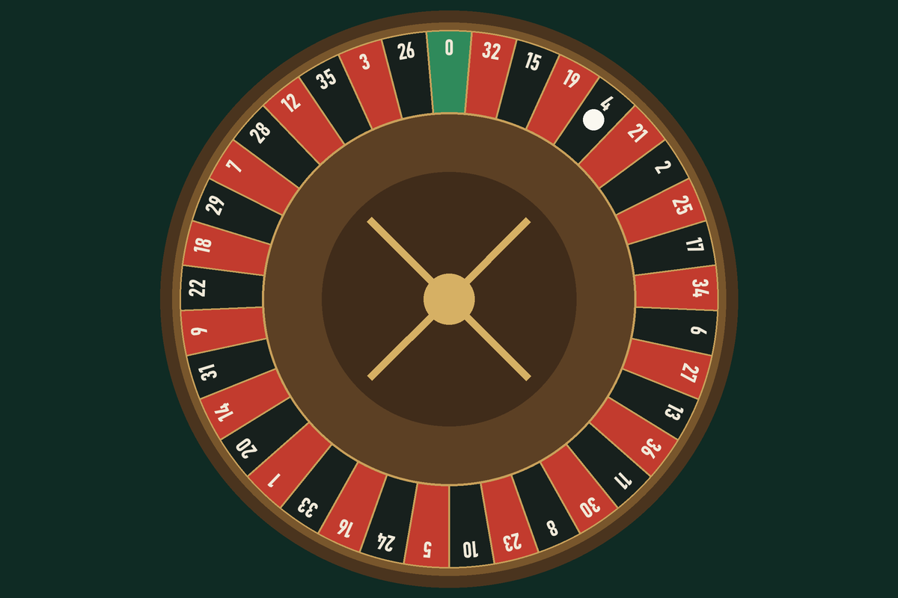

A casa
sempre ganha
Ninguém entra numa bet achando que vai perder. Este site mostra, com uma roleta de mentira e os seus próprios números, por que a conta nunca fecha para quem aposta.
Você tem R$ 100 de mentira. Cada giro aposta R$ 10 no vermelho. Se der vermelho, você recebe R$ 20.
Por que isso existe
Em 2024, uma pesquisa do Senado estimou que 22 milhões de brasileiros tinham apostado em bets no mês anterior. Em 2025, o primeiro ano do mercado regulado, as casas autorizadas receberam mais de R$ 220 bilhões em depósitos e ficaram com cerca de R$ 37 bilhões.
O material que existe sobre o assunto costuma ser técnico demais ou só proibir. Aqui a ideia é outra: deixar você ver o mecanismo funcionando, e depois fazer a conta com os seus números.

Os jogos desta casa
Cada página do site é um jogo diferente das bets: pôquer, caça-níquel, multiplicador, apostas esportivas, roleta, loteria, bingo e dados. Em todos eles, a conta é a mesma. Comece pelas três ferramentas:
-
Simulador
Jogue centenas de rodadas em segundos, com três estratégias diferentes, e veja o saldo de cada uma.
-
Calculadora
Diga quanto vai para apostas por semana e há quanto tempo. Ela mostra o total em reais, em aluguéis e no que esse dinheiro teria virado guardado.
-
Plano de limites
Defina um teto e uma data de início. O plano fica salvo neste navegador e, quando você voltar, mostra em que dia está e quanto já usou.